Rustningar, sköldar och tillbehör
Rustningar, sköldar och tillbehör i Valheim – 148 föremål med biom, fyndplats, verktyg som krävs, recept och användning.
Inget föremål hittades.
 Askkappa
Askkappa
Tunna metalltrådar är invävda i manteln och skapar ett intrikat mönster, likt ett av nornorna vävt öde.
Så får du det
- Tillverka: Svart smedja (nivå 3) av 6 ×
 Asksvinspäls, 2 ×
Asksvinspäls, 2 ×  Morgen Sena, 5 ×
Morgen Sena, 5 ×  Eldmetall · per uppgradering: 2 × Asksvinspäls
Eldmetall · per uppgradering: 2 × Asksvinspäls
 Asks byxor
Asks byxor
Den förste man att ströva i Midgård föredrog att tassa fram. Med såna här byxor kan man lära sig ett och annat av honom.
Så får du det
- Tillverka: Svart smedja (nivå 3) av 15 ×
 Linnetråd, 4 ×
Linnetråd, 4 ×  Oxödlepäls, 10 × Asksvinspäls · per uppgradering: 10 × Linnetråd, 2 × Oxödlepäls, 5 × Asksvinspäls
Oxödlepäls, 10 × Asksvinspäls · per uppgradering: 10 × Linnetråd, 2 × Oxödlepäls, 5 × Asksvinspäls
 Asks huva
Asks huva
Som Midgårds förste man visste Ask att det var viktigt att inte dra åt sig uppmärksamheten.
Så får du det
- Tillverka: Svart smedja (nivå 3) av 15 × Linnetråd, 4 × Oxödlepäls, 10 × Asksvinspäls · per uppgradering: 10 × Linnetråd, 2 × Oxödlepäls, 5 × Asksvinspäls
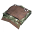
Asks rustningMidgårds förste man visste hur man håller sitt inre på insidan -- kanske med en rustning just som denna.
Så får du det
- Tillverka: Svart smedja (nivå 3) av 15 × Linnetråd, 4 × Oxödlepäls, 10 × Asksvinspäls · per uppgradering: 10 × Linnetråd, 2 × Oxödlepäls, 5 × Asksvinspäls
 Asksvinsmantel
Asksvinsmantel
Den tjocka manteln fångar vinden likt seglet på ett skepp.
Så får du det
- Tillverka: Galderbord (nivå 2) av 6 × Asksvinspäls, 2 × Morgen Sena · per uppgradering: 2 × Asksvinspäls
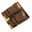
Benskenor av bronsBenskydd av brons skyddar dig mot låga slag.
Så får du det
- Tillverka: Smedja av 5 ×
 Brons, 2 ×
Brons, 2 ×  Rådjursskinn · per uppgradering: 3 × Brons
Rådjursskinn · per uppgradering: 3 × Brons
 Benskenor av järn
Benskenor av järn
Benskydd av järn skyddar dig mot låga slag.
Så får du det
- Tillverka: Smedja (nivå 2) av 20 ×
 Järn, 2 × Rådjursskinn · per uppgradering: 5 × Järn
Järn, 2 × Rådjursskinn · per uppgradering: 5 × Järn
 Breastplate of the Protector
Breastplate of the Protector
Fur and hide and metal all work in tandem to ward off an enemy's blows.
Så får du det
- Tillverka: Svart smedja (nivå 4) av 20 ×
 Bloodgold, 1 ×
Bloodgold, 1 ×  Mould: Breastplate of the Protector, 8 ×
Mould: Breastplate of the Protector, 8 ×  Moose Hide, 4 ×
Moose Hide, 4 ×  Leather Straps · per uppgradering: 15 × Bloodgold, 3 × Moose Hide, 3 × Leather Straps
Leather Straps · per uppgradering: 15 × Bloodgold, 3 × Moose Hide, 3 × Leather Straps - Tillaga: Frost Foundry av
 Cast: Breastplate of the Protector
Cast: Breastplate of the Protector
 Brimstone
Brimstone
It's warm, as if filled with a lifesblood of its own.
Så får du det
- Tillverka: Svart smedja av 5 × Eldmetall, 5 ×
 Svavel, 1 ×
Svavel, 1 ×  Smält härd, 1 ×
Smält härd, 1 ×  Morgenstrofé
Morgenstrofé
 Bronsbucklare
Bronsbucklare
En sköld av polerat brons. Klarar att vända en klinga eller två.
Så får du det
 Bronsharnesk
Bronsharnesk
Ett bröstpansar gjort av hamrat brons.
Så får du det
- Tillverka: Smedja av 5 × Brons, 2 × Rådjursskinn · per uppgradering: 3 × Brons
 Bronshjälm
Bronshjälm
Denna kommer hålla kvar din hjärna innanför ditt skallben.
Så får du det
- Tillverka: Smedja av 5 × Brons, 2 × Rådjursskinn · per uppgradering: 3 × Brons
 Bronze Pendant
Bronze Pendant
A beautiful pendant, harbouring the endurance of a bear.
Så får du det
- Tillverka: Smedja av 5 × Brons, 1 ×
 Björntrofé, 3 ×
Björntrofé, 3 ×  Rubin
Rubin
 Byxor av trolläder
Byxor av trolläder
Byxor av kraftig trollhud.
Så får du det
- Tillverka: Arbetsbänk (nivå 2) av 5 ×
 Trollskinn · per uppgradering: 2 × Trollskinn
Trollskinn · per uppgradering: 2 × Trollskinn
 Cape of the Caller
Cape of the Caller
A strange magic is woven into this cape, making it both light and warm.
Så får du det
- Tillverka: Galderbord (nivå 4) av 6 ×
 Seal Pelt, 2 ×
Seal Pelt, 2 ×  Nornathread, 5 × Bloodgold, 15 × Raffinerad Eter · per uppgradering: 3 × Seal Pelt, 1 × Nornathread, 2 × Bloodgold, 5 × Raffinerad Eter
Nornathread, 5 × Bloodgold, 15 × Raffinerad Eter · per uppgradering: 3 × Seal Pelt, 1 × Nornathread, 2 × Bloodgold, 5 × Raffinerad Eter
 Carapaxbucklare
Carapaxbucklare
En sökares skalle är hård men inte tung, vilket gör den perfekt för en liten och nätt sköld.
Så får du det
- Tillverka: Svart smedja av 16 ×
 Carapax, 3 ×
Carapax, 3 ×  Fjällskinn, 10 × Raffinerad Eter · per uppgradering: 8 × Carapax, 3 × Fjällskinn, 3 × Raffinerad Eter
Fjällskinn, 10 × Raffinerad Eter · per uppgradering: 8 × Carapax, 3 × Fjällskinn, 3 × Raffinerad Eter
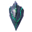
CarapaxsköldDina fienders nästan ospräckbara skal utgör en utmärkt sköld.
Så får du det
- Tillverka: Svart smedja av 20 × Carapax, 3 × Fjällskinn, 10 × Raffinerad Eter · per uppgradering: 10 × Carapax, 3 × Fjällskinn, 3 × Raffinerad Eter
 Celebratory Cap
Celebratory Cap
You simply can't help but feel happy when donning this cap!
Så får du det
- Tillverka: Arbetsbänk (nivå 2) av 2 × Rådjursskinn, 1 × Brons, 1 ×
 Björnhud, 1 ×
Björnhud, 1 ×  Bärnstenspärla · per uppgradering: 1 × Rådjursskinn, 1 × Brons
Bärnstenspärla · per uppgradering: 1 × Rådjursskinn, 1 × Brons
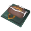
Chestpiece of the VanguardExpertly crafted leather armour, offering excellent protection without limiting a warrior's movements.
Så får du det
- Tillverka: Svart smedja (nivå 4) av 12 × Bloodgold, 1 ×
 Mould: Chestpiece of the Vanguard, 8 ×
Mould: Chestpiece of the Vanguard, 8 ×  Elaking Hair Bundle, 4 × Leather Straps · per uppgradering: 6 × Bloodgold, 4 × Elaking Hair Bundle, 2 × Leather Straps
Elaking Hair Bundle, 4 × Leather Straps · per uppgradering: 6 × Bloodgold, 4 × Elaking Hair Bundle, 2 × Leather Straps - Tillaga: Frost Foundry av
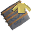
Cast: Chestpiece of the Vanguard
 Crown of Roots
Crown of Roots
A painful, yet intricate headpiece.
Så får du det
- Köp: Myrhäxan · 3 000 mynt · när du har besegrat Writhan
 Crown of Valheim
Crown of Valheim
A glorious reward for the truly worthy.
Så får du det
- Tillverka: Svart smedja (nivå 4) av 5 × Bloodgold, 1 ×
 Crown Jewel
Crown Jewel
 Crystal Heart
Crystal Heart
A shard of frozen sorrow. Touching it makes you feel almost numb.
Så får du det
- Tillverka: Smedja av 5 ×
 Silver, 5 ×
Silver, 5 ×  Kristall, 1 ×
Kristall, 1 ×  Stengolemstrofé
Stengolemstrofé
 De modigas armband
De modigas armband
Your mind hardens, as do your blows.
Så får du det
- Tillverka: Smedja av 5 ×
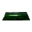
Svartmetall, 5 ×Oxödlepäls, 1 ×  Oxödlehuvud
Oxödlehuvud
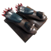
DimvandrarbyxorBenskydd av kraftigt insektsskal.
Så får du det
- Tillverka: Svart smedja av 20 × Carapax, 3 × Fjällskinn, 5 × Järn, 4 × Raffinerad Eter · per uppgradering: 10 × Carapax, 1 × Fjällskinn, 2 × Raffinerad Eter
 Dimvandrarharnesk
Dimvandrarharnesk
Ett bröstharnesk skapt av en jättelik insekts polerade kvarlevor.
Så får du det
- Tillverka: Svart smedja av 20 × Carapax, 3 × Fjällskinn, 5 × Järn, 4 × Raffinerad Eter · per uppgradering: 10 × Carapax, 1 × Fjällskinn, 2 × Raffinerad Eter
 Dimvandrarhjälm
Dimvandrarhjälm
Folk kommer påstå att du liknar en stor myra. Men bara en gång.
Så får du det
- Tillverka: Svart smedja av 16 × Carapax, 3 × Fjällskinn, 2 ×
 Käke, 4 × Raffinerad Eter · per uppgradering: 8 × Carapax, 1 × Fjällskinn, 2 × Raffinerad Eter
Käke, 4 × Raffinerad Eter · per uppgradering: 8 × Carapax, 1 × Fjällskinn, 2 × Raffinerad Eter
 Drakhjälm
Drakhjälm
En utstuderad och välarbetad hjälm.
Så får du det
 Dvärgadiadem
Dvärgadiadem
En portabel och permanent ljuskälla för grottutforskaren.
Så får du det
- Köp: Haldor · 620 mynt
 Eldmetallbyxor
Eldmetallbyxor
Tjocka byxor skyddar mot hettan, medan gedigna benskenor skyddar dina smalben från slag under bältet.
Så får du det
- Tillverka: Svart smedja (nivå 3) av 20 × Eldmetall, 3 × Asksvinspäls, 5 ×
 Bränt ben · per uppgradering: 10 × Eldmetall, 1 × Asksvinspäls
Bränt ben · per uppgradering: 10 × Eldmetall, 1 × Asksvinspäls
 Eldmetallharnesk
Eldmetallharnesk
Denna blandning av mystisk eldmetall och brända ben bildar ett skyddande skikt mer motståndskraftigt än något du står finna i Midgård.
Så får du det
- Tillverka: Svart smedja (nivå 3) av 20 × Eldmetall, 3 × Asksvinspäls, 5 × Bränt ben, 1 ×
 Morgens Hjärta · per uppgradering: 10 × Eldmetall, 1 × Asksvinspäls
Morgens Hjärta · per uppgradering: 10 × Eldmetall, 1 × Asksvinspäls
 Eldmetallhjälm
Eldmetallhjälm
Med denna hjälm på huvudet kommer dina fiender tänka till en gång extra innan de försöker bita av det.
Så får du det
- Tillverka: Svart smedja (nivå 3) av 16 × Eldmetall, 3 × Asksvinspäls, 2 × Bränt ben, 4 × Raffinerad Eter · per uppgradering: 8 × Eldmetall, 1 × Asksvinspäls, 2 × Raffinerad Eter
 Eldmetallsköld
Eldmetallsköld
Skölden är och förblir en vikings viktigaste vapen.
Så får du det
- Tillverka: Svart smedja (nivå 3) av 10 ×
 Askträ, 8 × Eldmetall, 2 × Asksvinspäls · per uppgradering: 10 × Askträ, 4 × Eldmetall, 2 × Asksvinspäls
Askträ, 8 × Eldmetall, 2 × Asksvinspäls · per uppgradering: 10 × Askträ, 4 × Eldmetall, 2 × Asksvinspäls
 Emblas benkläder
Emblas benkläder
Huruvida urhäxan faktiskt bar sådana byxor får vi förmodligen aldrig veta.
Så får du det
- Tillverka: Galderbord (nivå 2) av 20 × Linnetråd, 20 × Raffinerad Eter, 10 × Asksvinspäls · per uppgradering: 10 × Linnetråd, 5 × Raffinerad Eter
 Emblas hätta
Emblas hätta
Även urhäxan uppskattade mystiken som skänks den som täcker sitt ansikte. Att på sådant vis hedra henne ryktas göra din trollkraft starkare.
Så får du det
- Tillverka: Galderbord (nivå 2) av 16 × Linnetråd, 15 × Raffinerad Eter, 2 × Asksvinspäls · per uppgradering: 8 × Linnetråd, 5 × Raffinerad Eter
 Emblas skrud
Emblas skrud
Välsignade med urhäxans makt skänker dessa plagg förmåner till var och en som vill tämja den uråldriga trollkonst.
Så får du det
- Tillverka: Galderbord (nivå 2) av 20 × Linnetråd, 20 × Raffinerad Eter, 10 × Asksvinspäls, 5 × Eldmetall · per uppgradering: 10 × Linnetråd, 5 × Raffinerad Eter, 2 × Eldmetall
 Enkel klänning
Enkel klänning
En enkel klänning.
Så får du det
- Köp: Hildir · 250 mynt
 Enkel klänning, blå
Enkel klänning, blå
En enkel blå klänning.
Så får du det
- Köp: Hildir · 350 mynt · när du har lämnat tillbaka Hildirs mässingskista
 Enkel klänning, brun
Enkel klänning, brun
En enkel brun klänning.
Så får du det
- Köp: Hildir · 350 mynt · när du har lämnat tillbaka Hildirs mässingskista
 Enkel klänning, gul
Enkel klänning, gul
En enkel gul klänning.
Så får du det
- Köp: Hildir · 350 mynt · när du har lämnat tillbaka Hildirs mässingskista
 Enkel mössa, lila
Enkel mössa, lila
En enkel men moderiktig lila mössa.
Så får du det
- Köp: Hildir · 150 mynt
 Enkel mössa, röd
Enkel mössa, röd
En enkel men moderiktig röd mössa.
Så får du det
- Köp: Hildir · 150 mynt
 Enkel tunika
Enkel tunika
En enkel tunika.
Så får du det
- Köp: Hildir · 250 mynt
 Enkel tunika, blå
Enkel tunika, blå
En enkel blå tunika.
Så får du det
- Köp: Hildir · 350 mynt · när du har lämnat tillbaka Hildirs mässingskista
 Enkel tunika, gul
Enkel tunika, gul
En enkel gul tunika.
Så får du det
- Köp: Hildir · 350 mynt · när du har lämnat tillbaka Hildirs mässingskista
 Enkel tunika, röd
Enkel tunika, röd
En enkel röd tunika.
Så får du det
- Köp: Hildir · 350 mynt · när du har lämnat tillbaka Hildirs mässingskista
 Etervävarens byxor
Etervävarens byxor
Magiker bär alltid snävt skurna byxor. Obehag är nyckeln till magiskt fokus...
Så får du det
- Tillverka: Galderbord av 20 × Linnetråd, 20 × Raffinerad Eter, 10 × Fjällskinn · per uppgradering: 10 × Linnetråd, 5 × Raffinerad Eter
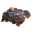
Etervävarens dräktDessa skickligt vävda klädnader har amuletter och trolldom i varje veck och fålla.
Så får du det
- Tillverka: Galderbord av 20 × Linnetråd, 20 × Raffinerad Eter, 10 ×
 Fjädrar, 5 × Fjällskinn · per uppgradering: 10 × Linnetråd, 5 × Raffinerad Eter
Fjädrar, 5 × Fjällskinn · per uppgradering: 10 × Linnetråd, 5 × Raffinerad Eter
 Etervävarens huva
Etervävarens huva
Trolldom visar sig i ögonen, så många magiker bär kåpor för att dölja sina ockulta sysselsättningar.
Så får du det
- Tillverka: Galderbord av 16 × Linnetråd, 15 × Raffinerad Eter, 2 × Järn · per uppgradering: 8 × Linnetråd, 5 × Raffinerad Eter
 Evasion Mantle
Evasion Mantle
Dance with death as you dodge your enemies' strikes.
Så får du det
- Tillverka: Smedja av 5 × Svartmetall, 1 ×
 Fulingkämpes huvud, 10 × Linnetråd
Fulingkämpes huvud, 10 × Linnetråd
 Fenrisbyxor
Fenrisbyxor
Magra och starka var odjurets ben, så att det kunde ta väldiga språng.
Så får du det
- Tillverka: Arbetsbänk (nivå 2) av 20 ×
 Fenrishår, 5 ×
Fenrishår, 5 ×  Vargpäls, 10 ×
Vargpäls, 10 ×  Läderlappar · per uppgradering: 5 × Fenrishår, 3 × Vargpäls, 4 × Läderlappar
Läderlappar · per uppgradering: 5 × Fenrishår, 3 × Vargpäls, 4 × Läderlappar
 Fenrishuva
Fenrishuva
Visa och vetande var odjurets ögon, så att det kunde uppskatta en krigares styrka i blott ett ögonkast.
Så får du det
- Tillverka: Arbetsbänk (nivå 2) av 20 × Fenrishår, 2 × Vargpäls, 1 ×
 Kultisttrofé · per uppgradering: 5 × Fenrishår, 4 × Vargpäls
Kultisttrofé · per uppgradering: 5 × Fenrishår, 4 × Vargpäls
 Fenriskappa
Fenriskappa
Djupa andetag tog odjuret, så att dess ylande kunde höras landet över.
Så får du det
- Tillverka: Arbetsbänk (nivå 2) av 20 × Fenrishår, 5 × Vargpäls, 10 × Läderlappar · per uppgradering: 5 × Fenrishår, 3 × Vargpäls, 4 × Läderlappar
 Fins of Destiny
Fins of Destiny
Empty your mind as you become shapeless and one with the water.
Så får du det
- Tillverka: Smedja av 5 ×
 Kitin, 5 ×
Kitin, 5 ×  Ormfjäll, 1 ×
Ormfjäll, 1 ×  Havsormshuvud
Havsormshuvud
 Fiskarhatt
Fiskarhatt
Denna tilldragande hatt kan endast en rutinerad fiskare håva in.
Så får du det
- Tillverka: Arbetsbänk av 1 ×
 Abborre, 1 ×
Abborre, 1 ×  Gädda, 1 ×
Gädda, 1 ×  Tonfisk, 1 ×
Tonfisk, 1 ×  Tetra, 1 ×
Tetra, 1 ×  Trollfisk, 1 ×
Trollfisk, 1 ×  Jätteströmming, 1 ×
Jätteströmming, 1 ×  Havsabborre, 1 ×
Havsabborre, 1 ×  Koralltorsk, 1 ×
Koralltorsk, 1 ×  Marulk, 1 ×
Marulk, 1 ×  Nordisk lax, 1 ×
Nordisk lax, 1 ×  Magmafisk, 1 ×
Magmafisk, 1 ×  Blåsfisk · per uppgradering: 1 × Abborre, 1 × Gädda, 1 × Tonfisk, 1 × Tetra, 1 × Trollfisk, 1 × Jätteströmming, 1 × Havsabborre, 1 × Koralltorsk, 1 × Marulk, 1 × Nordisk lax, 1 × Magmafisk, 1 × Blåsfisk
Blåsfisk · per uppgradering: 1 × Abborre, 1 × Gädda, 1 × Tonfisk, 1 × Tetra, 1 × Trollfisk, 1 × Jätteströmming, 1 × Havsabborre, 1 × Koralltorsk, 1 × Marulk, 1 × Nordisk lax, 1 × Magmafisk, 1 × Blåsfisk
 Fjäderkappa
Fjäderkappa
Med denna mantel över axlarna känner du dig lättare, nästan så du kunde flyga!
Så får du det
- Tillverka: Galderbord av 10 × Fjädrar, 5 × Fjällskinn, 20 × Raffinerad Eter · per uppgradering: 2 × Fjädrar, 5 × Fjällskinn, 3 × Raffinerad Eter
 Förstärkt sköld
Förstärkt sköld
Förstärkt med järn, en sann krigares kompanjon.
Så får du det
 Halmhatt
Halmhatt
Ett utmärkt sätt att undvika värmeslag.
Så får du det
- Köp: Hildir · 300 mynt · när du har lämnat tillbaka Hildirs mässingskista
 Headband
Headband
It feels a bit...moist.
Så får du det
- Köp: Hildir · 175 mynt
 Headdress of the Bear
Headdress of the Bear
Let the primal rage of a mighty bear consume you.
Så får du det
- Tillverka: Arbetsbänk (nivå 2) av 5 × Björnhud, 1 × Björntrofé · per uppgradering: 2 × Björnhud
 Headdress of the Caller
Headdress of the Caller
The spirits of the land come as you beckon. Are they fooled by your disguise?
Så får du det
- Tillverka: Galderbord (nivå 3) av 2 ×
 Moose Sinew, 1 ×
Moose Sinew, 1 ×  Mould: Headdress of the Caller, 1 ×
Mould: Headdress of the Caller, 1 ×  Moose Trophy, 3 × Nornathread · per uppgradering: 1 × Moose Sinew, 2 × Nornathread
Moose Trophy, 3 × Nornathread · per uppgradering: 1 × Moose Sinew, 2 × Nornathread - Tillaga: Frost Foundry av
 Cast: Headdress of the Caller
Cast: Headdress of the Caller
 Heart of the Forest
Heart of the Forest
It pulsates with fragments of ancient life.
Så får du det
- Tillverka: Smedja av 5 × Brons, 5 ×
 Uråldrigt frö, 1 ×
Uråldrigt frö, 1 ×  Grådvärgaschamans huvud
Grådvärgaschamans huvud
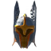
Helmet of the ProtectorEmbellished with the wings of victory.
Så får du det
- Tillverka: Svart smedja (nivå 4) av 20 × Bloodgold, 1 ×
 Mould: Helmet of the Protector, 4 × Moose Hide · per uppgradering: 15 × Bloodgold, 3 × Moose Hide
Mould: Helmet of the Protector, 4 × Moose Hide · per uppgradering: 15 × Bloodgold, 3 × Moose Hide - Tillaga: Frost Foundry av
 Cast: Helmet of the Protector
Cast: Helmet of the Protector
 Hood of the Vanguard
Hood of the Vanguard
Something to protect your neck from the elements as well as from the sharp teeth of the enemy.
Så får du det
- Tillverka: Svart smedja (nivå 4) av 5 × Seal Pelt, 1 ×
 Mould: Hood of the Vanguard, 5 × Moose Hide, 1 × Moose Sinew · per uppgradering: 3 × Seal Pelt, 3 × Moose Hide, 1 × Moose Sinew
Mould: Hood of the Vanguard, 5 × Moose Hide, 1 × Moose Sinew · per uppgradering: 3 × Seal Pelt, 3 × Moose Hide, 1 × Moose Sinew - Tillaga: Frost Foundry av
 Cast: Hood of the Vanguard
Cast: Hood of the Vanguard
 Hög bensköld
Hög bensköld
Döda krigares ben skänker starkt skydd.
Så får du det
- Tillverka: Arbetsbänk (nivå 3) av 10 ×
 Trä, 10 ×
Trä, 10 ×  Benfragment, 3 ×
Benfragment, 3 ×  Skalle · per uppgradering: 5 × Trä, 5 × Benfragment
Skalle · per uppgradering: 5 × Trä, 5 × Benfragment
 Hög eldmetallsköld
Hög eldmetallsköld
Bäst försvar är ett jättebra försvar.
Så får du det
- Tillverka: Svart smedja (nivå 3) av 15 × Askträ, 10 × Eldmetall, 5 × Asksvinspäls · per uppgradering: 10 × Askträ, 4 × Eldmetall, 2 × Asksvinspäls
 Hög järnsköld
Hög järnsköld
En hög sköld av starkt järn.
Så får du det
 Hög svartmetallsköld
Hög svartmetallsköld
En gedigen sköld av skinande mörk metall.
Så får du det
- Tillverka: Smedja (nivå 3) av 15 ×
 Ädelträ, 10 × Svartmetall, 7 ×
Ädelträ, 10 × Svartmetall, 7 ×  Kedja · per uppgradering: 10 × Ädelträ, 4 × Svartmetall, 2 × Kedja
Kedja · per uppgradering: 10 × Ädelträ, 4 × Svartmetall, 2 × Kedja
 Hög träsköld
Hög träsköld
En grov och tung träsköld.
Så får du det
- Tillverka: Arbetsbänk av 10 × Trä, 6 × Läderlappar · per uppgradering: 5 × Trä, 3 × Läderlappar
 Iron Brooch
Iron Brooch
A delicate yet defensive accessory.
Så får du det
- Tillverka: Smedja av 5 × Järn, 5 ×
 Uråldrig bark, 1 ×
Uråldrig bark, 1 ×  Igelhuvud
Igelhuvud
 Julemössa
Julemössa
En röd luva i hustomtarnas stil.
Så får du det
- Köp: Haldor · 100 mynt
 Järnbucklare
Järnbucklare
Dess låga vikt och kurvade mitt gör den utmärkt lämpad att avleda slag.
Så får du det
- Tillverka: Smedja (nivå 2) av 10 × Järn, 4 × Uråldrig bark · per uppgradering: 5 × Järn, 1 × Uråldrig bark
 Järnfjällsbrynja
Järnfjällsbrynja
En fjällbrynja av järn skyddar dig mot allt utom de hårdaste slag.
Så får du det
- Tillverka: Smedja (nivå 2) av 20 × Järn, 2 × Rådjursskinn · per uppgradering: 5 × Järn
 Järnhjälm
Järnhjälm
En hjälm av polerat järn, passande en hjälte.
Så får du det
- Tillverka: Smedja av 20 × Järn, 2 × Rådjursskinn · per uppgradering: 5 × Järn
 Jörmundling
Jörmundling
Tormented screams resonate from within.
Så får du det
- Tillverka: Svart smedja av 5 × Eldmetall, 5 × Raffinerad Eter, 1 ×
 Blodsten, 1 ×
Blodsten, 1 ×  Trofé av en stupad valkyrja
Trofé av en stupad valkyrja
 Klänning med sjal, blå
Klänning med sjal, blå
En blå klänning med en tillhörande varm sjal.
Så får du det
- Köp: Hildir · 450 mynt · när du har lämnat tillbaka Hildirs silverkista
 Klänning med sjal, brun
Klänning med sjal, brun
En brun klänning med en tillhörande varm sjal.
Så får du det
- Köp: Hildir · 450 mynt · när du har lämnat tillbaka Hildirs silverkista
 Klänning med sjal, gul
Klänning med sjal, gul
En gul klänning med en tillhörande varm sjal.
Så får du det
- Köp: Hildir · 450 mynt · när du har lämnat tillbaka Hildirs silverkista
 Knuten huvudduk, blå
Knuten huvudduk, blå
En praktisk blå huvudduk.
Så får du det
- Köp: Hildir · 200 mynt · när du har lämnat tillbaka Hildirs mässingskista
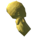
Knuten huvudduk, gulEn praktisk gul huvudduk.
Så får du det
- Köp: Hildir · 250 mynt · när du har lämnat tillbaka Hildirs silverkista
 Lappad tunika
Lappad tunika
Bättre än inget.
Så får du det
- Tillverka: Arbetsbänk av 5 × Läderlappar · per uppgradering: 5 × Läderlappar
 Lappade byxor
Lappade byxor
Ett botemedel mot att vara naken.
Så får du det
- Tillverka: Arbetsbänk av 5 × Läderlappar · per uppgradering: 5 × Läderlappar
 Linnekappa
Linnekappa
En enkel färdkappa.
Så får du det
 Loincloth of the Bear
Loincloth of the Bear
It covers all the important bits, but not much else.
Så får du det
 Lox Fur Hood
Lox Fur Hood
See the world like a lox might.
Så får du det
- Tillverka: Arbetsbänk (nivå 2) av 4 × Oxödlepäls, 4 × Benfragment, 2 ×
 Writhan Roots · per uppgradering: 2 × Oxödlepäls, 2 × Benfragment, 1 × Writhan Roots
Writhan Roots · per uppgradering: 2 × Oxödlepäls, 2 × Benfragment, 1 × Writhan Roots
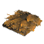
Lox Fur JacketA heavy musk still clings to it.
Så får du det
- Tillverka: Arbetsbänk (nivå 2) av 5 × Oxödlepäls, 8 × Benfragment, 2 ×
 Rot · per uppgradering: 6 × Oxödlepäls, 4 × Benfragment, 1 × Rot
Rot · per uppgradering: 6 × Oxödlepäls, 4 × Benfragment, 1 × Rot
 Lox Fur Trousers
Lox Fur Trousers
Soft, silent and flexible.
Så får du det
- Tillverka: Arbetsbänk (nivå 2) av 5 × Oxödlepäls, 8 × Benfragment, 2 × Rot · per uppgradering: 3 × Oxödlepäls, 4 × Benfragment, 1 × Rot
 Lysande irrbloss
Lysande irrbloss
Ett irrbloss bundet till dig, att vägleda dig genom de tjockaste dimmor.
Så får du det
 Läderbyxor
Läderbyxor
Dom gnisslar lite när du går.
Så får du det
- Tillverka: Arbetsbänk (nivå 2) av 6 × Rådjursskinn · per uppgradering: 6 × Rådjursskinn, 5 × Benfragment
 Läderhjälm
Läderhjälm
En huva av förstärkt läder.
Så får du det
- Tillverka: Arbetsbänk (nivå 2) av 6 × Rådjursskinn · per uppgradering: 6 × Rådjursskinn, 5 × Benfragment
 Lädertunika
Lädertunika
En tunika gjord av djurhud.
Så får du det
- Tillverka: Arbetsbänk (nivå 2) av 6 × Rådjursskinn · per uppgradering: 6 × Rådjursskinn, 5 × Benfragment
 Megingjord
Megingjord
Ger bäraren övermänskliga krafter.
Så får du det
- Köp: Haldor · 950 mynt
 Moose Hide Cape
Moose Hide Cape
A warm cape with fine details of spun gold.
Så får du det
- Tillverka: Svart smedja (nivå 4) av 6 × Moose Hide, 2 × Moose Sinew, 5 × Bloodgold · per uppgradering: 3 × Moose Hide, 1 × Moose Sinew, 2 × Bloodgold
 Neckstabber
Neckstabber
Claw and bone and gold – grant them blood and they shall grant you a boon.
Så får du det
- Tillverka: Svart smedja av 5 × Bloodgold, 5 ×
 Long Claws, 1 × Moose Trophy
Long Claws, 1 × Moose Trophy
 Nimble Anklet
Nimble Anklet
Puts a spring in your step!
Så får du det
- Tillverka: Smedja av 5 × Järn, 5 ×
 Förtorkat ben, 1 ×
Förtorkat ben, 1 ×  Surtlingstrofé
Surtlingstrofé
 Nord Buckler
Nord Buckler
An effective method of protection, with sufficient skill.
Så får du det
- Tillverka: Svart smedja (nivå 4) av 10 × Bloodgold, 1 ×
 Mould: Nord Buckler, 10 ×
Mould: Nord Buckler, 10 ×  Timberwood · per uppgradering: 5 × Bloodgold, 5 × Timberwood
Timberwood · per uppgradering: 5 × Bloodgold, 5 × Timberwood - Tillaga: Frost Foundry av
 Cast: Nord Buckler
Cast: Nord Buckler
 Nord Greatshield
Nord Greatshield
Your foes can't hit you if they can't see you!
Så får du det
- Tillverka: Svart smedja (nivå 4) av 20 × Bloodgold, 1 ×
 Mould: Nord Greatshield, 20 × Timberwood · per uppgradering: 10 × Bloodgold, 10 × Timberwood
Mould: Nord Greatshield, 20 × Timberwood · per uppgradering: 10 × Bloodgold, 10 × Timberwood - Tillaga: Frost Foundry av
 Cast: Nord Greatshield
Cast: Nord Greatshield
 Nord Shield
Nord Shield
Stay safe, and do so in style.
Så får du det
- Tillverka: Svart smedja (nivå 4) av 15 × Bloodgold, 1 ×
 Mould: Nord Shield, 10 × Timberwood · per uppgradering: 8 × Bloodgold, 5 × Timberwood
Mould: Nord Shield, 10 × Timberwood · per uppgradering: 8 × Bloodgold, 5 × Timberwood - Tillaga: Frost Foundry av
 Cast: Nord Shield
Cast: Nord Shield
 Odens huva
Odens huva
Odens mäktigaste krigare förtjänar de finaste tyger.
Så får du det
- Tillverka: Arbetsbänk av 10 × Läderlappar, 4 ×
 Kol · per uppgradering: 5 × Läderlappar, 2 × Kol
Kol · per uppgradering: 5 × Läderlappar, 2 × Kol
 Odens mantel
Odens mantel
Odens mäktigaste krigare förtjänar de finaste tyger.
Så får du det
- Tillverka: Arbetsbänk av 10 × Läderlappar, 4 × Kol · per uppgradering: 5 × Läderlappar, 2 × Kol
 Ormfjällssköld
Ormfjällssköld
En stadig sköld av varvade fjäll.
Så får du det
 Oxödlemantel
Oxödlemantel
En päls från en väldig best, tjock och varm.
Så får du det
- Tillverka: Arbetsbänk (nivå 2) av 6 × Oxödlepäls, 2 × Silver · per uppgradering: 2 × Oxödlepäls
 Patterns of the Bear
Patterns of the Bear
If these intricate designs can protect warriors from distant lands, they can surely protect you too.
Så får du det
 Pulsating Earrings
Pulsating Earrings
If you listen carefully, you can hear the faint echoes of lost souls...
Så får du det
- Tillverka: Svart smedja av 5 × Carapax, 5 × Raffinerad Eter, 1 ×
 Gjalltrofé
Gjalltrofé
 Pälsmössa, brun
Pälsmössa, brun
En varm pälsmössa av finaste läder.
Så får du det
- Köp: Hildir · 200 mynt · när du har lämnat tillbaka Hildirs mässingskista
 Pälsmössa, grå
Pälsmössa, grå
En varm pälsmössa av finaste ylle.
Så får du det
- Köp: Hildir · 300 mynt · när du har lämnat tillbaka Hildirs bronskista
 Resounding Shackle
Resounding Shackle
A razor-sharp ankle chain. Can it truly be comfortable?
Så får du det
- Tillverka: Svart smedja av 5 × Raffinerad Eter, 5 × Fjällskinn, 1 × Käke, 1 ×
 Sökartrofé
Sökartrofé
 Robes of the Caller
Robes of the Caller
Gold trimmed robes, fit for only the most powerful of mages.
Så får du det
- Tillverka: Galderbord (nivå 3) av 6 × Bloodgold, 1 ×
 Mould: Robes of the Caller, 6 × Moose Hide, 5 × Nornathread · per uppgradering: 3 × Bloodgold, 3 × Moose Hide, 3 × Nornathread
Mould: Robes of the Caller, 6 × Moose Hide, 5 × Nornathread · per uppgradering: 3 × Bloodgold, 3 × Moose Hide, 3 × Nornathread - Tillaga: Frost Foundry av
 Cast: Robes of the Caller
Cast: Robes of the Caller
 Rotbyxor
Rotbyxor
Ett lätt pansar egendomligt vävt av uråldrig rot och bark.
Så får du det
- Tillverka: Arbetsbänk (nivå 2) av 10 × Rot, 10 × Uråldrig bark, 2 × Rådjursskinn · per uppgradering: 2 × Rot, 5 × Uråldrig bark
 Rotharnesk
Rotharnesk
Vackert smidd och stark nog att vända även de vassaste klingor.
Så får du det
- Tillverka: Arbetsbänk (nivå 2) av 10 × Rot, 10 × Uråldrig bark, 2 × Rådjursskinn · per uppgradering: 2 × Rot, 5 × Uråldrig bark
 Rotmask
Rotmask
En tät knast av bark och rot. Ditt huvud ryms precis.
Så får du det
- Tillverka: Arbetsbänk (nivå 2) av 10 × Rot, 10 × Uråldrig bark, 4 × Läderlappar · per uppgradering: 2 × Rot, 5 × Uråldrig bark
 Rådjursmantel
Rådjursmantel
Rustik chic.
Så får du det
- Tillverka: Arbetsbänk (nivå 2) av 4 × Rådjursskinn, 5 × Benfragment · per uppgradering: 4 × Rådjursskinn, 5 × Benfragment
 Shield of Roots
Shield of Roots
Malleable roots have been twisted into a surprisingly sturdy shield.
Så får du det
- Tillverka: Arbetsbänk (nivå 2) av 10 × Ädelträ, 1 × Writhan Roots · per uppgradering: 5 × Ädelträ, 2 × Writhan Roots
 Silversköld
Silversköld
En strålande silversköld.
Så får du det
 Skördeklänning
Skördeklänning
När man jobbar på fältet är det viktigt man klär sig rätt. Den långa klänningen håller knäna täckta medan du jobbar.
Så får du det
- Köp: Hildir · 550 mynt · när du har lämnat tillbaka Hildirs mässingskista
 Skördetunika
Skördetunika
När man jobbar på fältet är det viktigt man klär sig rätt. En kortare tunika släpper in svala brisar.
Så får du det
- Köp: Hildir · 550 mynt · när du har lämnat tillbaka Hildirs mässingskista
 Svartmetallsköld
Svartmetallsköld
Smidd med den starkaste av metaller klarar den att vända även de vassaste klingor.
Så får du det
- Tillverka: Smedja (nivå 3) av 10 × Ädelträ, 8 × Svartmetall, 5 × Kedja · per uppgradering: 10 × Ädelträ, 4 × Svartmetall, 2 × Kedja
 Trollskinnsmantel
Trollskinnsmantel
Trollskinn är kraftigt och smidigt.
Så får du det
- Tillverka: Arbetsbänk (nivå 2) av 10 × Trollskinn, 10 × Benfragment · per uppgradering: 5 × Trollskinn, 5 × Benfragment
 Trolläderhjälm
Trolläderhjälm
Trollskinn är svårt att bearbeta, men ger ett enastående försvar.
Så får du det
- Tillverka: Arbetsbänk (nivå 2) av 5 × Trollskinn, 3 × Benfragment · per uppgradering: 2 × Trollskinn, 1 × Benfragment
 Trousers of the Caller
Trousers of the Caller
Tight legwraps to keep the cold from touching your skin.
Så får du det
- Tillverka: Galderbord (nivå 3) av 6 × Bloodgold, 1 ×
 Mould: Trousers of the Caller, 6 × Moose Hide, 5 × Nornathread · per uppgradering: 3 × Bloodgold, 3 × Moose Hide, 3 × Nornathread
Mould: Trousers of the Caller, 6 × Moose Hide, 5 × Nornathread · per uppgradering: 3 × Bloodgold, 3 × Moose Hide, 3 × Nornathread - Tillaga: Frost Foundry av
 Cast: Trousers of the Caller
Cast: Trousers of the Caller
 Trousers of the Protector
Trousers of the Protector
Heavy boots and trousers, to keep you warm as you trudge through deep snow.
Så får du det
- Tillverka: Svart smedja (nivå 4) av 20 × Bloodgold, 1 ×
 Mould: Trousers of the Protector, 8 × Moose Hide, 4 × Leather Straps · per uppgradering: 15 × Bloodgold, 3 × Moose Hide, 3 × Leather Straps
Mould: Trousers of the Protector, 8 × Moose Hide, 4 × Leather Straps · per uppgradering: 15 × Bloodgold, 3 × Moose Hide, 3 × Leather Straps - Tillaga: Frost Foundry av
 Cast: Trousers of the Protector
Cast: Trousers of the Protector
 Trousers of the Vanguard
Trousers of the Vanguard
Warm trousers suitable for a cold climate. The boots offer excellent grip in the icy terrain.
Så får du det
- Tillverka: Svart smedja (nivå 4) av 12 × Bloodgold, 1 ×
 Mould: Trousers of the Vanguard, 8 × Elaking Hair Bundle, 4 × Seal Pelt · per uppgradering: 6 × Bloodgold, 4 × Elaking Hair Bundle, 2 × Seal Pelt
Mould: Trousers of the Vanguard, 8 × Elaking Hair Bundle, 4 × Seal Pelt · per uppgradering: 6 × Bloodgold, 4 × Elaking Hair Bundle, 2 × Seal Pelt - Tillaga: Frost Foundry av
 Cast: Trousers of the Vanguard
Cast: Trousers of the Vanguard
 Träsköld
Träsköld
En enkel träsköld.
Så får du det
- Tillverka: Arbetsbänk av 10 × Trä, 4 ×
 Kåda, 4 × Läderlappar · per uppgradering: 5 × Trä, 2 × Kåda, 2 × Läderlappar
Kåda, 4 × Läderlappar · per uppgradering: 5 × Trä, 2 × Kåda, 2 × Läderlappar
 Tunika av trolläder
Tunika av trolläder
Troll är svåra att flå, men deras läder är kraftigt och varmt.
Så får du det
- Tillverka: Arbetsbänk (nivå 2) av 5 × Trollskinn · per uppgradering: 2 × Trollskinn
 Tunikamantel, blå
Tunikamantel, blå
En blå tunika med en mantel.
Så får du det
- Köp: Hildir · 450 mynt · när du har lämnat tillbaka Hildirs silverkista
 Tunikamantel, gul
Tunikamantel, gul
En gul tunika med en mantel.
Så får du det
- Köp: Hildir · 450 mynt · när du har lämnat tillbaka Hildirs silverkista
 Tunikamantel, röd
Tunikamantel, röd
En röd tunika med en mantel.
Så får du det
- Köp: Hildir · 450 mynt · när du har lämnat tillbaka Hildirs silverkista
 Utsmyckad klänning, blå
Utsmyckad klänning, blå
En blå klänning besmyckad med pärlor och brons.
Så får du det
- Köp: Hildir · 550 mynt · när du har lämnat tillbaka Hildirs bronskista
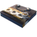
Utsmyckad klänning, brunEn brun klänning besmyckad med pärlor och silver.
Så får du det
- Köp: Hildir · 550 mynt · när du har lämnat tillbaka Hildirs bronskista
 Utsmyckad klänning, gul
Utsmyckad klänning, gul
En gul klänning besmyckad med pärlor och silver.
Så får du det
- Köp: Hildir · 550 mynt · när du har lämnat tillbaka Hildirs bronskista
 Utsmyckad tunika, blå
Utsmyckad tunika, blå
En blå tunika besmyckad med pärlor och silver.
Så får du det
- Köp: Hildir · 550 mynt · när du har lämnat tillbaka Hildirs bronskista
 Utsmyckad tunika, gul
Utsmyckad tunika, gul
En gul tunika besmyckad med pärlor och brons.
Så får du det
- Köp: Hildir · 550 mynt · när du har lämnat tillbaka Hildirs bronskista
 Utsmyckad tunika, röd
Utsmyckad tunika, röd
En röd tunika besmyckad med pärlor och brons.
Så får du det
- Köp: Hildir · 550 mynt · när du har lämnat tillbaka Hildirs bronskista
 Vadderad hjälm
Vadderad hjälm
Passar perfekt, riktigt mysig.
Så får du det
 Vadderad kyrass
Vadderad kyrass
Vackert smidd och stark nog att vända även de vassaste klingor.
Så får du det
 Vadderat benpansar
Vadderat benpansar
Mästerligt tillverkat benskydd.
Så får du det
 Vargskinnsbrynja
Vargskinnsbrynja
En väst av vargskinn, varm och vildsynt. Den skyddar mot kylan.
Så får du det
 Vargskinnsbyxor
Vargskinnsbyxor
Lurviga benklädnader av vargskinn.
Så får du det
 Vargskinnsmantel
Vargskinnsmantel
Vargar är födda överlevare. Den här hade otur. Nu kommer den hålla dig varm i snön.
Så får du det
 Vilebone Cage
Vilebone Cage
Crafted from the shattered bones of a tormented bear.
Så får du det
- Tillverka: Smedja (nivå 2) av 4 × Björnhud, 3 ×
 Kadaver bröstkorg, 4 × Linnetråd · per uppgradering: 2 × Björnhud, 1 × Kadaver bröstkorg, 1 × Linnetråd
Kadaver bröstkorg, 4 × Linnetråd · per uppgradering: 2 × Björnhud, 1 × Kadaver bröstkorg, 1 × Linnetråd
 Vilebone Drapes
Vilebone Drapes
Thick hides and bone fragments woven into a rugged skirt.
Så får du det
- Tillverka: Smedja (nivå 2) av 10 × Björnhud, 1 × Kadaver bröstkorg, 4 × Linnetråd · per uppgradering: 5 × Björnhud, 1 × Kadaver bröstkorg, 1 × Linnetråd
 Vilebone Visage
Vilebone Visage
Inspiring fear in foes and courage in kin when worn.
Så får du det
- Tillverka: Smedja (nivå 2) av 5 × Björnhud, 1 ×
 Kadavertrofé · per uppgradering: 2 × Björnhud
Kadavertrofé · per uppgradering: 2 × Björnhud
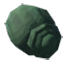
Vriden huvudduk, grönEn stilig grön huvudduk.
Så får du det
- Köp: Hildir · 250 mynt · när du har lämnat tillbaka Hildirs silverkista
 Vriden huvudduk, röd
Vriden huvudduk, röd
En stilig röd huvudduk.
Så får du det
- Köp: Hildir · 300 mynt · när du har lämnat tillbaka Hildirs bronskista
 Witch Crown
Witch Crown
They say that the soul of a witch can grant strange powers to mortals...
Så får du det
- Tillverka: Svart smedja av 5 × Bloodgold, 5 × Nornathread, 1 ×
 Hexen Trophy
Hexen Trophy
 Wolf Sight
Wolf Sight
Assume the sharp and furious mind of a wolf.
Så får du det
- Tillverka: Smedja av 5 × Silver, 5 ×
 Vargtand, 1 ×
Vargtand, 1 ×  Fenringstass
Fenringstass
 Önskeben
Önskeben
Det uråldriga benet minns platserna för många fördolda ting.
Så får du det
- Släpps av: Likhögen · Träsk
 Överdådig mössa, grön
Överdådig mössa, grön
En extravagant grön mössa.
Så får du det
- Köp: Hildir · 250 mynt · när du har lämnat tillbaka Hildirs silverkista
 Överdådig mössa, orange
Överdådig mössa, orange
En extravagant orange mössa.
Så får du det
- Köp: Hildir · 300 mynt · när du har lämnat tillbaka Hildirs bronskista